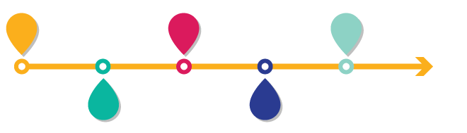

<!doctype html>
<html lang="en">
    <head>
        <meta charset="utf-8">
        <meta name="viewport" content="width=device-width, initial-scale=1.0, maximum-scale=1.0, user-scalable=no">

        <title>Introdução ao Design Gráfico</title>
        <link rel="stylesheet" href="./css/reveal.css">
        <link rel="stylesheet" href="./css/theme/blood.css" id="theme">
        <link rel="stylesheet" href="./css/highlight/zenburn.css">
        <link rel="stylesheet" href="./css/print/paper.css" type="text/css" media="print">
          <link rel="stylesheet" href="./_assets/custom.css">


    </head>
    <body>

        <div class="reveal">
            <div class="slides"><section  data-markdown><script type="text/template">


### Introdução ao Design Gráfico

_Autor: Andrew Ribeiro_
</script></section><section  data-markdown><script type="text/template">
### Conteúdos

- O que é Design Gráfico?
- História
- Conceitos
- Prática
</script></section><section ><section data-markdown><script type="text/template">


#### O que é Design Gráfico?
</script></section><section data-markdown><script type="text/template">
<!-- .slide: data-background-image="assets/about.jpg" -->

**De uma forma simples**

> O processo de resolução de um problema visual utilizando a tipografia,
as fotografia, as cores e a ilustração.
</script></section><section data-markdown><script type="text/template">
<!-- .slide: data-background-image="assets/visual.jpg" -->

O Design Gráfico é um subcampo da

### Comunicação Visual

O Design Digital é um subcampo do

### Design Gráfico
</script></section><section data-markdown><script type="text/template">
<!-- .slide: data-background-image="assets/creation.jpg" -->

Os designers criam ou combinam **símbolos**, **imagens** e **textos**
para representar uma ideia ou transmitir uma mensagem.
</script></section></section><section ><section data-markdown><script type="text/template">


### História
</script></section><section data-markdown><script type="text/template"><!-- .slide: data-background-image="assets/camaleao.jpg" -->

O termo **Design Gráfico** foi fundado em 1922 por

### William Addison Dwiggins


</script></section><section data-markdown><script type="text/template">
<!-- .slide: data-background-image="assets/lascaux.jpg" -->

No entanto, a verdadeira origem do **Design Gráfico** vem de há muito tempo atrás.

### Lascaux Cave, França.

_17 mil anos atrás_
</script></section><section data-markdown><script type="text/template">
<!-- .slide: data-background-image="assets/rosetta.jpg" -->

### Rosetta Stone, Egito.

_2 mil anos atrás_
</script></section><section data-markdown><script type="text/template">
<!-- .slide: data-background-image="assets/manuscript.jpg" -->

### Manuscritos Iluminados

_Mil anos atrás_
</script></section><section data-markdown><script type="text/template">
<!-- .slide: data-background-image="assets/brigade.jpg" -->

### Design Gráfico é quase tudo
</script></section></section><section ><section data-markdown><script type="text/template">


### Conceitos
</script></section><section data-markdown><script type="text/template">
<!-- .slide: data-background-image="assets/concepts.jpg" -->

7 Conceitos Básicos de Design

_Adobe, 2016_
</script></section><section data-markdown><script type="text/template">
<!-- .slide: data-background="linear-gradient(67deg, rgba(0,0,0,1) 0%, rgba(91,85,85,1) 50%, rgba(69,63,63,1) 100%)" -->

### 1 - Alinhamento


</script></section><section data-markdown><script type="text/template">
### 2 - Hierarquia


</script></section><section data-markdown><script type="text/template">
<!-- .slide: data-background="linear-gradient(67deg, rgba(0,0,0,1) 0%, rgba(91,85,85,1) 50%, rgba(69,63,63,1) 100%)" -->

### 3 - Contraste


</script></section><section data-markdown><script type="text/template">
### 4 - Repetição


</script></section><section data-markdown><script type="text/template">
<!-- .slide: data-background="linear-gradient(67deg, rgba(0,0,0,1) 0%, rgba(91,85,85,1) 50%, rgba(69,63,63,1) 100%)" -->

### 5 - Proximidade


</script></section><section data-markdown><script type="text/template">
### 6 - Cores


</script></section><section data-markdown><script type="text/template">

### 7 - Espaço
</script></section></section><section  data-markdown><script type="text/template">
<!-- .slide: data-background-image="assets/lamps.jpg" -->

> Comunicação não é só falar, ver ou ouvir, é fazer entender!

_Renato Ribeiro_
</script></section></div>
        </div>

        <script src="./lib/js/head.min.js"></script>
        <script src="./js/reveal.js"></script>

        <script>
            function extend() {
              var target = {};
              for (var i = 0; i < arguments.length; i++) {
                var source = arguments[i];
                for (var key in source) {
                  if (source.hasOwnProperty(key)) {
                    target[key] = source[key];
                  }
                }
              }
              return target;
            }

            // Optional libraries used to extend on reveal.js
            var deps = [
              { src: './lib/js/classList.js', condition: function() { return !document.body.classList; } },
              { src: './plugin/markdown/marked.js', condition: function() { return !!document.querySelector('[data-markdown]'); } },
              { src: './plugin/markdown/markdown.js', condition: function() { return !!document.querySelector('[data-markdown]'); } },
              { src: './plugin/highlight/highlight.js', async: true, callback: function() { hljs.initHighlightingOnLoad(); } },
              { src: './plugin/zoom-js/zoom.js', async: true },
              { src: './plugin/notes/notes.js', async: true },
              { src: './plugin/math/math.js', async: true }
            ];

            // default options to init reveal.js
            var defaultOptions = {
              controls: true,
              progress: true,
              history: true,
              center: true,
              transition: 'default', // none/fade/slide/convex/concave/zoom
              dependencies: deps
            };

            // options from URL query string
            var queryOptions = Reveal.getQueryHash() || {};

            var options = {"transition":"slide"};
            options = extend(defaultOptions, options, queryOptions);
        </script>


        <script>
          Reveal.initialize(options);
        </script>
    </body>
</html>
